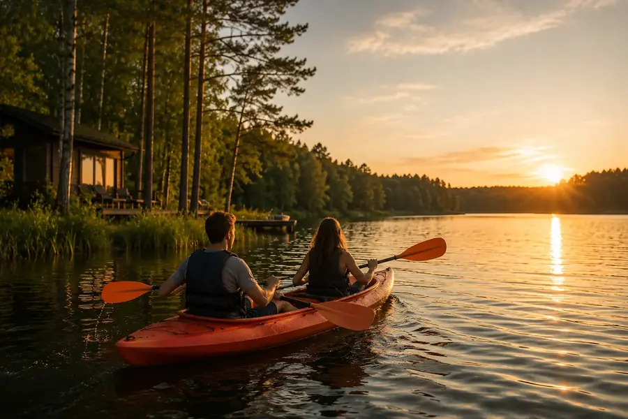
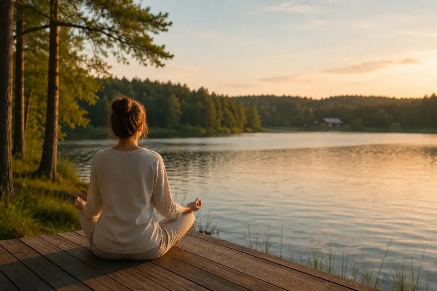
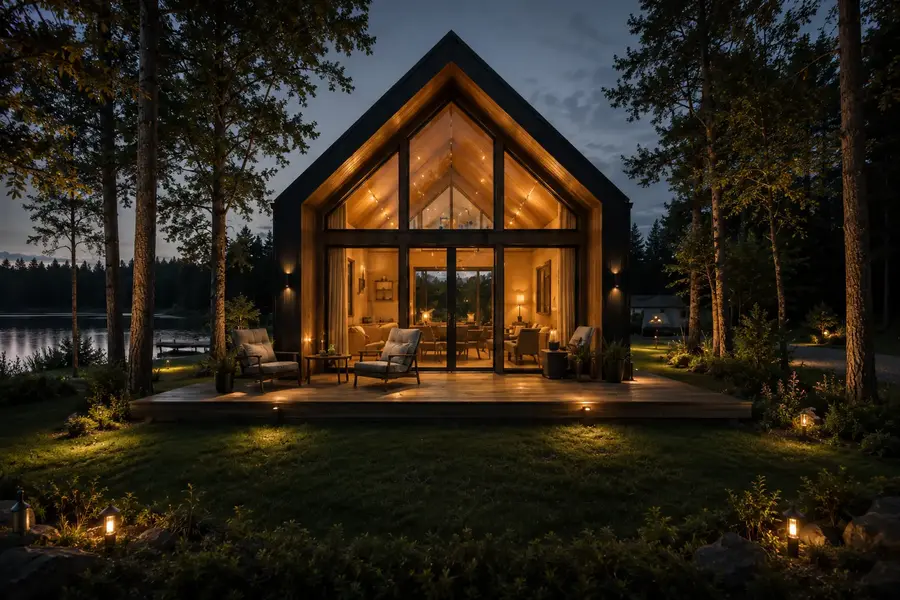
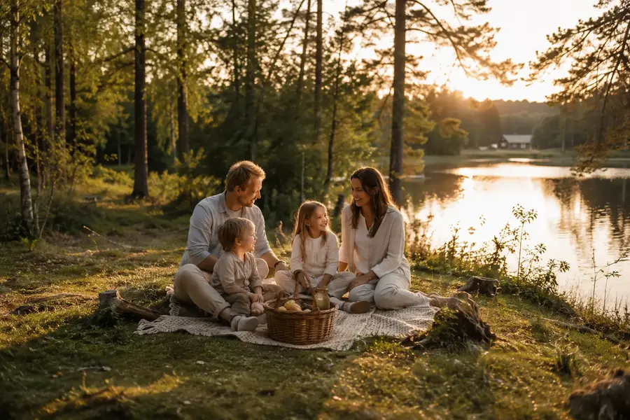
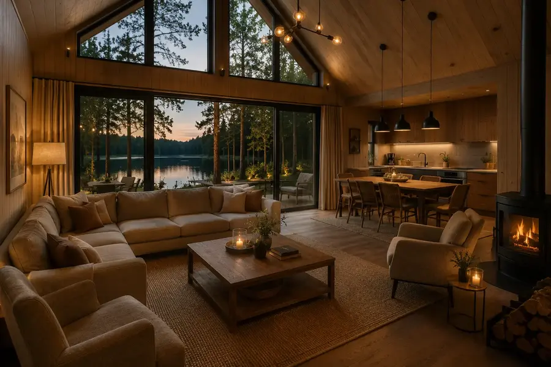
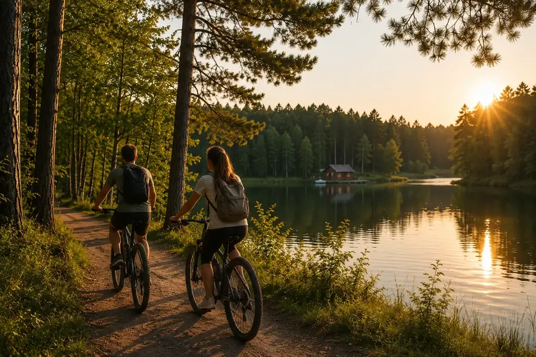
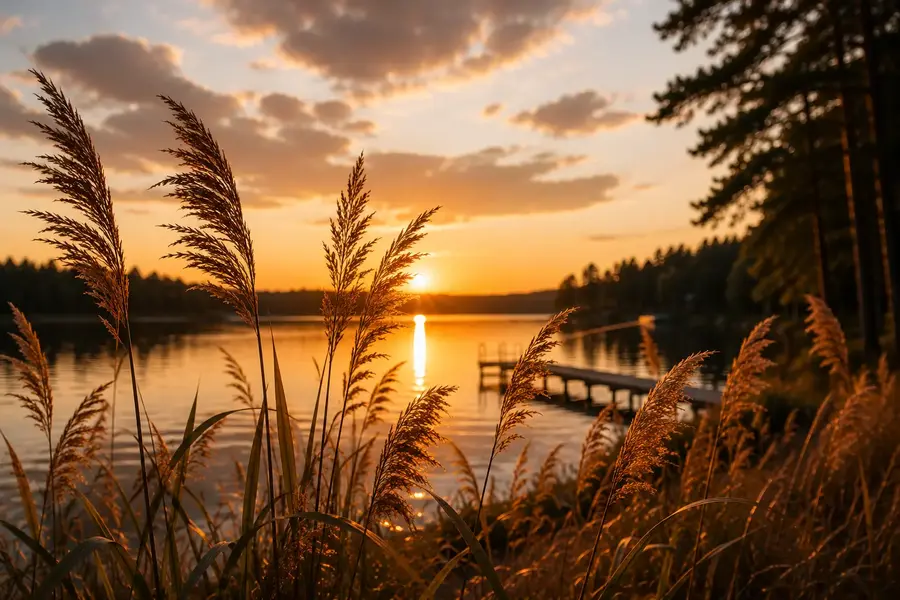
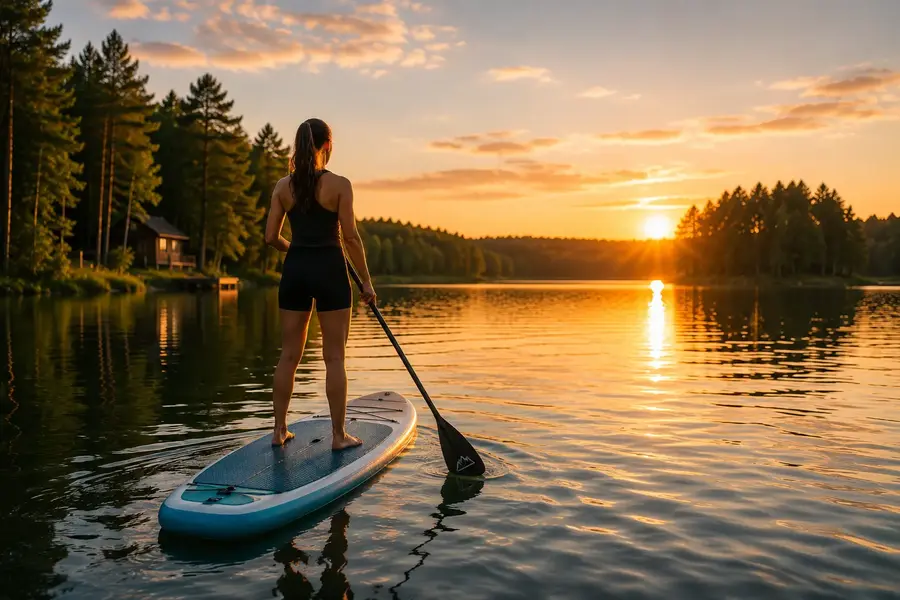
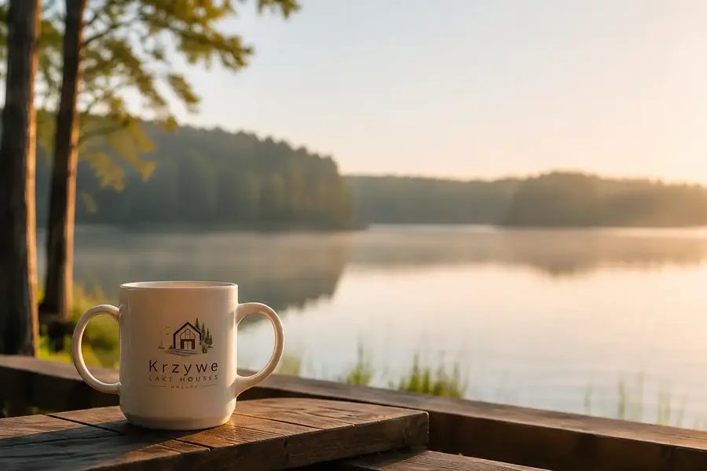

Atrakcje Mikołajki
Rejsy na Śniardwy, Wioska Żeglarska, promenada, wieża widokowa, muzea i Tropikana — plan na pogodę i niepogodę.
Pokaż Mikołajki
Przewodnik po Mazurach
Najciekawsze atrakcje Mikołajek, Mrągowa, Piecek, Kosewa, Kętrzyna i południowych Mazur — od dzikiej przyrody po rejsy, zamki, muzea i rodzinne wyprawy.
Mikołajki · Mrągowo · Piecki · Kosewo · Kętrzyn
Krzywe Lake Houses jest spokojną bazą między najciekawszymi punktami południowych Mazur. Podane czasy są orientacyjne i mogą się zmieniać zależnie od trasy, sezonu oraz przeprawy promowej.
Nasze mocne typy
Rodzinnie, aktywnie, spokojnie albo z historią w tle — wybierz klimat, a potem dopasuj resztę filtrami.
Spotkanie ze zwierzętami w krajobrazie Puszczy Piskiej.
Zobacz w przewodniku Rodzinnie · każda pogodaBaseny i wodna zabawa w Mikołajkach także w pochmurny dzień.
Zobacz w przewodniku Aktywnie · naturaKlasyczny mazurski dzień w spokojnym rytmie rzeki.
Zobacz w przewodniku Widok · historiaPanorama miasta i jezior z zabytkowej Wieży Bismarcka.
Zobacz w przewodnikuAtrakcje według miejscowości
Wybierz miejscowość i od razu przejdź do miejsc, które najlepiej pasują do Twojego dnia.
Rejsy na Śniardwy, Wioska Żeglarska, promenada, wieża widokowa, muzea i Tropikana — plan na pogodę i niepogodę.
Pokaż MikołajkiJezioro Czos, amfiteatr, Wieża Bismarcka, Park Linowy Lemur, Źródełko Miłości i miejskie muzea w jednym filtrze.
Pokaż MrągowoSpływ Krutynią, Kadzidłowo, leśne rezerwaty i lokalne muzea — najbliższe pomysły na spokojny dzień na Mazurach.
Pokaż Piecki i KrutyńJezioro Probarskie, krajobraz mazurskich wsi i spotkanie z jeleniowatymi — dobry kierunek dla rodzin i miłośników natury.
Pokaż KosewoZamek, bazylika, Stado Ogierów, Konsulat Świętego Mikołaja, Owczarnia i Reszel tworzą całodniową trasę pełną historii.
Pokaż Kętrzyn i ReszelŚluzy Guzianka, Wojnowo, Jezioro Nidzkie, Puszcza Piska i wieża ciśnień — miejsca na wodny lub krajoznawczy dzień.
Pokaż Ruciane-Nida i PiszInteraktywny przewodnik
Zapisuj serduszkiem miejsca, które chcesz odwiedzić. Twoja lista pozostanie w tej przeglądarce.
Całoroczne baseny, strefy rekreacyjne, zjeżdżalnie i atrakcje dla młodszych oraz starszych gości w Hotelu Gołębiewski. Dobry plan niezależnie od pogody.
Strona TropikanySpokojny sposób na zobaczenie największego jeziora w Polsce z pokładu statku. Trasy i godziny są sezonowe, dlatego warto sprawdzić rozkład przed wyjazdem.
Rozkład rejsówKeje, łodzie, restauracje i letni gwar tworzą najbardziej żeglarską część Mikołajek. W sezonie odbywają się tu koncerty i wydarzenia związane z kulturą wodniacką.
Poznaj portŁatwy spacer wzdłuż Jeziora Mikołajskiego, dobry na kawę, obiad i obserwowanie ruchu w porcie. Można połączyć go z poznawaniem starej części miasta.
Trasy spaceroweKameralna kolekcja poświęcona historii reformacji, piśmiennictwa i drukarstwa na Mazurach. Warto połączyć wizytę ze spacerem po centrum Mikołajek.
Informacje miejskiePunkt widokowy pozwalający zobaczyć miasto i otaczające je jeziora z góry. Wejście najlepiej zaplanować razem ze spacerem miejską trasą turystyczną.
Zobacz trasęRozległy widok na okolice Śniardw i cenne siedliska ptaków wodnych. Dobry wybór dla osób, które wolą lornetkę, ciszę i otwarty krajobraz.
Informacje o atrakcjiMazurskie Centrum Bioróżnorodności pokazuje przyrodę regionu w edukacyjnej, przystępnej formie. Ciekawa propozycja dla rodzin i osób zainteresowanych ekologią.
Informacje miejskieStylowy rejs po Jeziorze Mikołajskim, Bełdanach lub Śniardwach. To bardziej nastrojowa alternatywa dla klasycznego statku pasażerskiego.
Strona żaglowcaJedna z najbardziej rozpoznawalnych scen plenerowych Mazur. W sezonie warto sprawdzić kalendarz koncertów, festiwali i wydarzeń organizowanych nad wodą.
Kalendarz MrągowaPrzyjemna trasa łącząca centrum, molo, Ekomarinę i okolice amfiteatru. Sprawdza się na spokojny spacer, rower lub wieczorne wyjście.
Turystyka MrągowoSezonowe kursy po Jeziorze Czos pozwalają zobaczyć Mrągowo od strony wody. Dobry dodatek do spaceru po promenadzie i wizyty na miejskim molo.
Sprawdź kursyZabytkowa Wieża Bismarcka w Parku Sikorskiego mieści wystawy i prowadzi na taras widokowy. Z góry można zobaczyć panoramę miasta oraz okoliczne jeziora.
Strona atrakcjiOddział Muzeum Warmii i Mazur w zabytkowym ratuszu prezentuje historię, archeologię, etnografię i sztukę związaną z miastem oraz regionem.
Strona muzeumPrywatna kolekcja sprawnych pojazdów wojskowych i cywilnych. Duże eksponaty oraz możliwość zobaczenia maszyn z bliska robią wrażenie także na młodszych gościach.
Strona muzeumScenografia Dzikiego Zachodu, wydarzenia country i rodzinne atrakcje tworzą rozrywkową przeciwwagę dla jezior i lasów. Program warto sprawdzić przed wizytą.
Strona MrongovillePunkt widokowy i całoroczny teren rekreacyjny nad Jeziorem Czos. Zimą działa jako ośrodek narciarski, a latem przyciąga panoramą i aktywnościami terenowymi.
Strona G4WPokazowe ogrody o wielu stylach, miejsca wypoczynku, rośliny ozdobne i elementy edukacji ekologicznej. Kameralny kierunek na spokojne rodzinne popołudnie.
Strona ogrodówMiejsce związane z hodowlą i badaniami jeleniowatych, gdzie można poznać jelenie, daniele oraz inne gatunki. Zasady zwiedzania warto potwierdzić przed wyjazdem.
Informacje o miejscuRozległe wybiegi w Puszczy Piskiej pozwalają obserwować rodzime i rzadkie gatunki w warunkach zbliżonych do naturalnych. Zwiedzanie odbywa się według zasad parku.
Strona parku
Zobacz miejsce Fot. Krzywe Lake HousesJeden z najbardziej znanych nizinnych szlaków kajakowych. Na krótki wypad można wybrać spokojny odcinek, a na pełną przygodę zaplanować całodniowy spływ.
Informacje i spływyChroniony fragment rzeki i Puszczy Piskiej ze starymi drzewostanami oraz bogatym światem ptaków. Można poznawać go z kajaka albo pobliskich ścieżek.
Mazurski Park KrajobrazowyEkspozycja Mazurskiego Parku Krajobrazowego w zabytkowej mazurskiej stodole przybliża ptaki, ssaki i krajobraz regionu. Dobry początek przed spacerem po rezerwacie.
Strona parkuLeśna trasa prowadząca do śródleśnych jeziorek dystroficznych i boru bagiennego. Po drodze można zobaczyć pomniki przyrody i charakterystyczną „Zakochaną Parę”.
Opis ścieżkiKolekcja sztuki ludowej i dawnych przedmiotów codziennego użytku związanych z regionem. Muzeum prowadzi również warsztaty oraz zajęcia dla dzieci i grup.
Oferta muzeumŁagodna trasa spacerowa z długimi drewnianymi kładkami, wiatami i tablicami przyrodniczymi. Bliska, niewymagająca propozycja na krótki spacer oraz obserwację ptaków.
Opis atrakcjiDom rodzinny mazurskiego pisarza Ernsta Wiecherta mieści niewielką izbę pamięci. Miejsce łączy literaturę, lokalną historię i spokojny leśny krajobraz.
Lasy PaństwoweStylizowana osada inspirowana dawnym plemieniem Galindów, położona nad Bełdanami przy ujściu Krutyni. Łączy plener, opowieści historyczne i rodzinne zwiedzanie.
Strona GalindiiOśrodek na Półwyspie Popielniańskim znany z koników polskich i badań nad zwierzętami. Dojazd może obejmować sezonową przeprawę promową Wierzba–Popielno.
Strona stacjiMuzeum Konstantego Ildefonsa Gałczyńskiego w leśniczówce nad Jeziorem Nidzkim. Wizyta może łączyć ekspozycję literacką, wydarzenie kulturalne i spacer ścieżką przyrodniczą.
Strona muzeumRozległy obszar chroniący Puszczę Piską, rzekę Krutynię, Śniardwy i liczne rezerwaty. To wiele różnych tras, dlatego warto wybrać jedną ścieżkę zamiast próbować zobaczyć wszystko.
Przewodnik po parkuRozległe pozostałości wojennej kwatery ukryte w lesie. Trasa prowadzi między masywnymi schronami, a zwiedzanie najlepiej zaplanować z przewodnikiem lub audioprzewodnikiem.
Oficjalna stronaBarokowy zespół architektoniczny znany z bogatego wnętrza i prezentacji zabytkowych organów. Warto sprawdzić godziny zwiedzania oraz koncertów organowych.
Strona sanktuariumMonumentalny zamek krzyżacki dominujący nad miasteczkiem. Obiekt pełni dziś funkcję hotelową, ale organizuje również zwiedzanie, wydarzenia i historyczne atrakcje.
Strona zamkuRozległa XIX-wieczna fortyfikacja między jeziorami Niegocin i Kisajno. Kilka tras zwiedzania pozwala dopasować długość spaceru do pogody i możliwości grupy.
Strona twierdzyPark miniatur prezentujący charakterystyczne budowle Warmii i Mazur, uzupełniony rodzinnymi atrakcjami i ekspozycjami historycznymi. Łatwo połączyć go z Wilczym Szańcem.
Strona parkuSpokojniejszy akwen otoczony lasami, dobry na kajak, żagle i dłuższy spacer. Część jeziora znajduje się w rezerwacie ciszy, co wzmacnia naturalny charakter miejsca.
Mazurski Park Krajobrazowy
Zdjęcie ilustracyjne · Krzywe Lake HousesKameralny kierunek między Mrągowem a Mikołajkami, dobry na spokojny spacer i poznanie krajobrazu mazurskich wsi. Warto połączyć go z Fermą Jeleniowatych.
Informacja turystycznaOdbudowany zamek krzyżacki przy placu Zamkowym 1 mieści muzeum poświęcone historii miasta i regionu. Dobry początek spaceru po zabytkowym Kętrzynie.
Przewodnik po KętrzynieObronna gotycka świątynia przy ul. Zamkowej 5 należy do najważniejszych zabytków Kętrzyna. Wejście na wieżę pozwala zobaczyć panoramę miasta.
Poznaj Kętrzyn
Zdjęcie ilustracyjne · Krzywe Lake HousesHistoryczny kompleks stajni przy ul. Bałtyckiej 1 zachwyca skalą i architekturą. Przed wizytą warto sprawdzić bieżące zasady zwiedzania i kalendarz wydarzeń.
Informacje regionalne
Zdjęcie ilustracyjne · Krzywe Lake HousesKolorowe miejsce przy ul. Dworcowej 3A związane z ręcznym zdobieniem bombek i rodzinnymi warsztatami. Szczególnie dobry pomysł na chłodniejszy dzień z dziećmi.
Oficjalna strona
Zdjęcie ilustracyjne · Krzywe Lake HousesPrywatne muzeum prezentuje dawne mazurskie wnętrza, sprzęty i codzienność mieszkańców regionu. Zwiedzanie warto wcześniej uzgodnić, zwłaszcza poza sezonem.
Strona muzeumMonumentalny gotycki zamek przy ul. Podzamcze 3 i malownicze stare miasto tworzą jeden z najciekawszych historycznych przystanków w regionie.
Strona zamku
Zdjęcie ilustracyjne · Krzywe Lake HousesLeśne trasy o różnym poziomie trudności przy ul. Młynowej 50A pozwalają dopasować aktywność do wieku i odwagi uczestników. Dobra przeciwwaga dla dnia nad wodą.
Informacje turystyczne
Zdjęcie ilustracyjne · Krzywe Lake HousesKrótka, około półkilometrowa ścieżka w zielonej części Mrągowa sprawdza się jako spokojny spacer dla rodzin. Można połączyć ją z promenadą nad Czosem.
Opis ścieżki
Zdjęcie ilustracyjne · Krzywe Lake HousesJedno z najlepszych miejsc do obserwowania, jak jachty i statki pokonują różnicę poziomów między jeziorami. Największy ruch i najlepszy spektakl przypadają na sezon żeglarski.
Informacje miejskieWażny ślad kultury staroobrzędowców na Mazurach przy Wojnowie 76. Zabytkowy zespół i muzeum ikon pozwalają odkryć mniej znaną historię regionu.
Opis atrakcji
Zdjęcie ilustracyjne · Krzywe Lake HousesBiograficzne muzeum mazurskiego poety mieści się w jego dawnym domu pod adresem Ogródek 5. Kameralna ekspozycja łączy literaturę, historię i lokalną tożsamość.
Strona muzeumCharakterystyczna zabytkowa wieża jest jednym z najbardziej rozpoznawalnych punktów miasta. Warto połączyć ją ze spacerem po Piszu i wyprawą w stronę Puszczy Piskiej.
Przewodnik po MazurachZmień kategorię, region albo wpisz krótsze hasło.
Bez układania od zera
Każdy plan zostawia miejsce na spokojny powrót do domu, taras i wieczór nad Jeziorem Krzywe.
Najczęstsze pytania
Krótko i konkretnie: wybierz jeden kierunek, dopasuj tempo do pogody i zostaw czas na powrót nad Jezioro Krzywe.
505 586 950W Mikołajkach warto wybrać promenadę i Wioskę Żeglarską, rejs po jeziorach, Park Wodny Tropikana oraz wieżę widokową. Latem dobrze wcześniej sprawdzić rozkład rejsów i wydarzeń.
Dobrym zestawem jest promenada nad Jeziorem Czos, Park Linowy Lemur, Muzeum Sprzętu Wojskowego i krótka ścieżka przy Źródełku Miłości.
Najbliżej są Muzeum Regionalne w Pieckach, Krutyń, rezerwat Zakręt, Park Dzikich Zwierząt w Kadzidłowie oraz mazurskie szlaki piesze i kajakowe.
W Kosewie warto odwiedzić Fermę Jeleniowatych i zaplanować spokojny spacer w okolicy Jeziora Probarskiego. To dobry przystanek między Mrągowem a Mikołajkami.
Najciekawsze propozycje to zamek z muzeum regionalnym, Bazylika św. Jerzego z wieżą widokową, Stado Ogierów i rodzinny Konsulat Świętego Mikołaja.
Tak. Przy każdej pozycji znajduje się przycisk „Nawiguj”, który otwiera trasę do wskazanego miejsca w Mapach Google. Przed wyjazdem warto sprawdzić aktualne godziny otwarcia.
Twoja spokojna baza
Nasze domy pozwalają poznawać Mazury bez rezygnowania z ciszy, prywatności i wieczoru nad wodą.